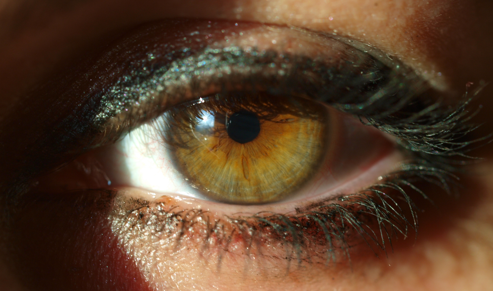

A Study of the Human Eye
Photorealistic close-up · 3-agent build

A photorealistic close-up of the human eye — the sclera and its delicate vessels, the layered iris with its radial fibres and dark limbal ring, the catchlight that brings it to life, and the lashes that frame it. Photograph courtesy of Wikimedia Commons (“A woman’s eye”), Creative Commons licensed.